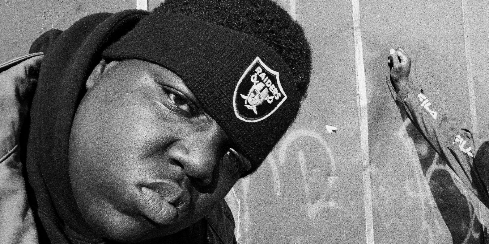

The Notorious B.I.G
Christopher George Latore Wallace (May 21, 1972 – March 9, 1997)
"The King Of New York"
The Notorious B.I.G., Biggie Smalls, or simply Biggie, was an American rapper and songwriter. Rooted in the New York rap scene and gangsta rap traditions, he is considered one of the greatest rappers of all time. Wallace became known for his distinctive laidback lyrical delivery, offsetting the
Early Life
Born and raised in Brooklyn, New York City, Wallace signed to Sean "Puffy" Combs' label Bad Boy Records as it launched in 1993, and gained exposure through features on several other artists' singles that year. His debut album Ready to Die (1994) was met with widespread critical acclaim, and included his signature songs "Juicy" and "Big Poppa". The album made him the central figure in East Coast hip hop, and restored New York's visibility at a time when the West Coast hip hop scene was dominating hip hop music.[4] Wallace was awarded the 1995 Billboard Music Awards' Rapper of the Year.[5] The following year, he led his protégé group Junior M.A.F.I.A., a team of himself and longtime friends, including Lil' Kim, to chart success.
Drive-by homicide (gunshot wounds)